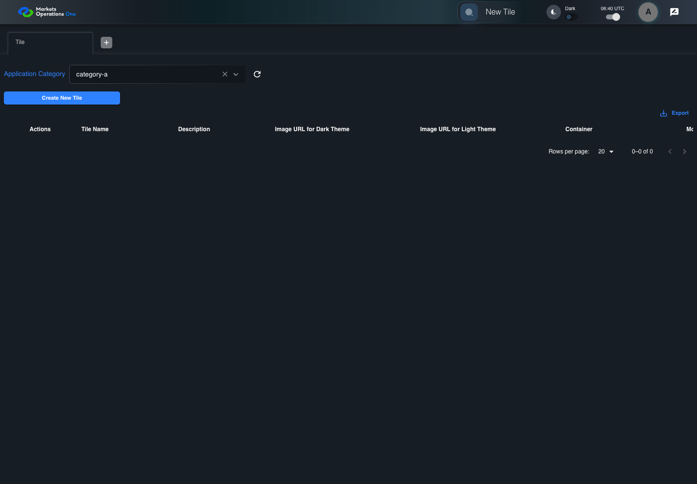
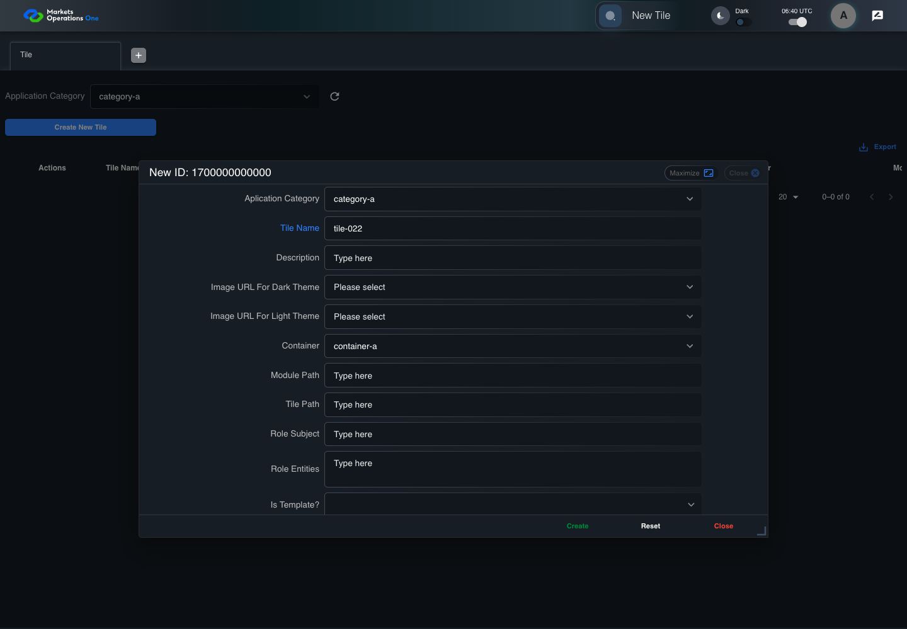
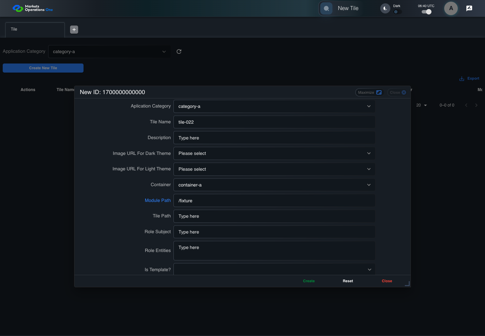
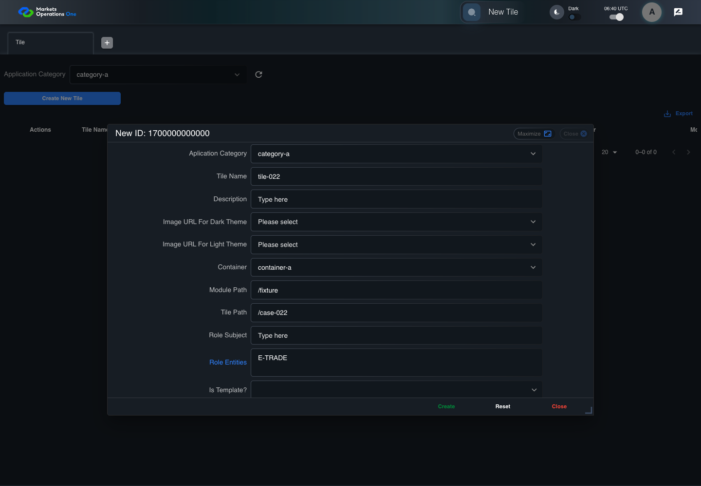
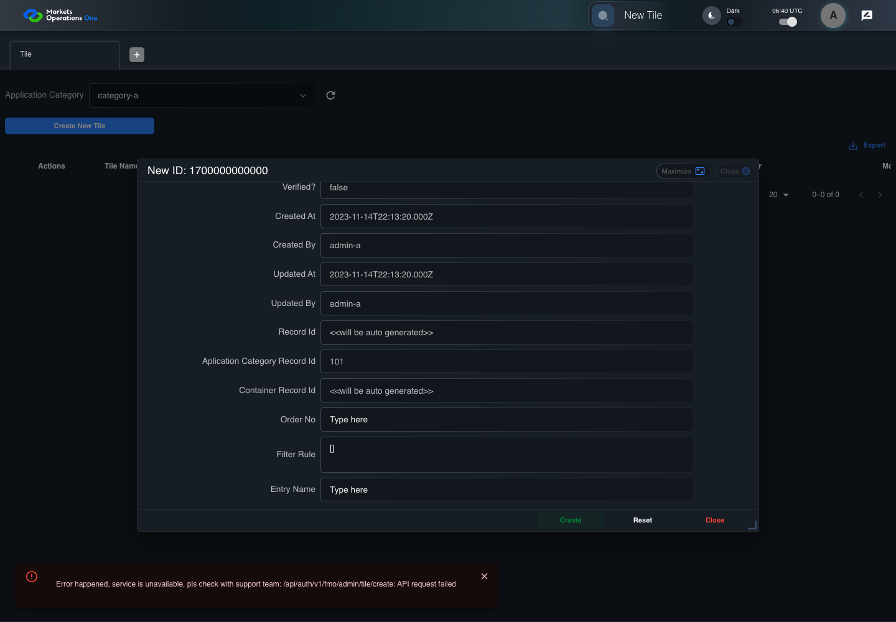

BFF-ADM-022 current BFF administration through actual UI
PASS · application/run-072/bff-adm-022-current-bff-administration-through-actual-ui-e007e2d16358-attempt-1 · ACTUAL_APPLICATION_LOCAL_SERVICES
Actual current React and exact-current BFF admin controllers/services/JPA with actual migration DDL in disposable PostgreSQL. Controlled OUD/EMS2 identities and local Spring bootstrap. Fixture SQL seeds/mutates isolated records; service errors are actual database errors. Undefined agreed messages remain unresolved acceptance.
2026-10-22T06:40:34.133Z to 2026-10-22T06:40:43.019Z
Assertions and result · Artifact manifest · Exact run inputs and source hashes
Result SHA-256:27f622a37de69f61fd6b8e50f47042d01f151f075fdf72ca49142778e4edd20cMachine observations
- actual-identity-projection.json
87a10fb0c027e29d75e4920f9ee9258ee28715445573088e813fca0ba1bf3f58 - baseline-inputs.json
4f6dedc3edb7832c8d7e3fad4fba08d949dd7f83aba4b188df5f3be9f875f50c - bff-boundary.json
43ebd79fb5de12087ee1daf2b4c5cb5edddbb2554701f52c769fb9c103755e81 - committed-ui-submission-comparisons.json
2c1d88731013f10c27b2acea6e02163d6e4825b14cabba5db322388bafd0858c - creation-clock.json
3b6c5cde584357c2e96e45cb8f19cc065a9dea621d99d42105e987bb08c8e3d8 - fixture-step-10.json
d71480eb9a3e1cce3cc557142bd9416738b6f8723fc746a41864e5e51ce30ea1 - fixture-step-11.json
0e81bf55ab20f3da7730100f34becde8eb2ff52c0c3c225e745332241a6a6bf1 - fixture-step-6.json
79a72dbcf97332953c88ca490d1b992b3f2710e4a643c210e3f515e4818a4efc - fixture-step-7.json
ae1035a1dc448c5b005d63bca26393352fddad66871ec0bed1117b0890db965f - fixture-step-8.json
41380ab584eea05f31dcf2e94f813d1b12bad588b7a530a1017d67cf91d4c990 - fixture-step-9.json
a854e065c08224ec487a1f076b44dab3a030a62fc213c061b80df135ea56880b - initial-persisted-records.json
0fc2ebf4b1a520116db26a4c568f16b7c6e974a96a288b3f8600cb2ea2a2ec29 - persisted-after-submit.json
7bc3787ba5da98e188aae301015064e30f8000e548f47a40d5097915a4580e31 - reference-snapshot-3.json
444fad7d33f9ca984bf0a5611d293e0e213328f2fafaab9e1fa00ee48b13d101 - reference-snapshot-4.json
1cd1fcb975a55f9d66fe73433ad9936a6f7b51077ff30e26dba20eec6ca5a40f - rejection-or-policy-observation.json
37a2c400d339ecc1b309ef562ebe0b09affe0ad119fe8766f73d9882f1ae9a27 - ui-origin-bff-requests.json
3990fc9658dbe9d8617bee3b74554cc4fa7e6f4851914c3b78fc205dcc22c809 - undefined-message-contract.json
9be8c00f2e74cd15621844cf61040b53bc9ef257232fcd3228886efed477bc2b
Screenshot capture: CAPTURED. Named frames: 25.
Step screenshot evidence: COMPLETE. 24/24 canonical steps have execution screenshots.
Canonical step timeline
Given Admin A uses subject "admin-a" with role "FMO_ADMIN" in an isolated authenticated browser
Execution: PASSED.
1. step-01 Visible state after step 1: Given Admin A uses subject "admin-a" with role "FMO_ADMIN" in an isolated authenticated browser
2026-10-22T06:40:37.177Z · 1440×1000
Step: /Users/lushevol/code/github/ratan-release-impact/workbench/tasks/ui-test-coverage-20261022/test-cases.md:15584
SHA-256:ec4d62b93d2f99420ef94e118ee21625dc7e03679011cda5cab66333492ee25eAnd the controlled Tile fixture records the initial grid rows and persisted values
Execution: PASSED.
2. step-02 Visible state after step 2: And the controlled Tile fixture records the initial grid rows and persisted values
2026-10-22T06:40:37.320Z · 1440×1000
Step: /Users/lushevol/code/github/ratan-release-impact/workbench/tasks/ui-test-coverage-20261022/test-cases.md:15585
SHA-256:747f1f3a55141956f62fdd96d3835012ac77e5380c856a0459aaa45816a45393And Category 101 has label "category-a" and Import Map 201 has Module Name "container-a"
Execution: PASSED.
3. step-03 Visible state after step 3: And Category 101 has label "category-a" and Import Map 201 has Module Name "container-a"
2026-10-22T06:40:37.394Z · 1440×1000
Step: /Users/lushevol/code/github/ratan-release-impact/workbench/tasks/ui-test-coverage-20261022/test-cases.md:15586
SHA-256:f6fbe917cb124cef8699cb85549ecb86ac9efcee572c12a8995298e65a7200aeAnd both references belong to "FMO_ADMIN" and the Tile page category filter value is Category 101
Execution: PASSED.
4. step-04 Visible state after step 4: And both references belong to "FMO_ADMIN" and the Tile page category filter value is Category 101
2026-10-22T06:40:37.459Z · 1440×1000
Step: /Users/lushevol/code/github/ratan-release-impact/workbench/tasks/ui-test-coverage-20261022/test-cases.md:15587
SHA-256:bff2fbbb8991f1809a0dc491436c1c3b9b6bf5bb09156bb382105182dcbfe3deAnd the controlled creation clock returns 1700000000000 milliseconds
Execution: PASSED.
5. step-05 Visible state after step 5: And the controlled creation clock returns 1700000000000 milliseconds
2026-10-22T06:40:37.509Z · 1440×1000
Step: /Users/lushevol/code/github/ratan-release-impact/workbench/tasks/ui-test-coverage-20261022/test-cases.md:15588
SHA-256:aeccd798f7b1c74721cf035f62d6803748d226e36a6f8e5e74ef910882a6db9cAnd the baseline fixture data defines "Tile Name" as "tile-022"
Execution: PASSED.
6. step-06 Visible state after step 6: And the baseline fixture data defines "Tile Name" as "tile-022"
2026-10-22T06:40:37.557Z · 1440×1000
Step: /Users/lushevol/code/github/ratan-release-impact/workbench/tasks/ui-test-coverage-20261022/test-cases.md:15589
SHA-256:cb2f83fd9df6875d821a218c49efe7d37c3406ef3eea1e598689e2d4219f4703And the baseline fixture data defines "Module Path" as "/fixture"
Execution: PASSED.
7. step-07 Visible state after step 7: And the baseline fixture data defines "Module Path" as "/fixture"
2026-10-22T06:40:37.612Z · 1440×1000
Step: /Users/lushevol/code/github/ratan-release-impact/workbench/tasks/ui-test-coverage-20261022/test-cases.md:15590
SHA-256:f2ae741beb67793ab3c740a7b011f51f6f0a0d2561c8ef428ab2f04107c6f581And the baseline fixture data defines "Tile Path" as "/case-022"
Execution: PASSED.
8. step-08 Visible state after step 8: And the baseline fixture data defines "Tile Path" as "/case-022"
2026-10-22T06:40:37.678Z · 1440×1000
Step: /Users/lushevol/code/github/ratan-release-impact/workbench/tasks/ui-test-coverage-20261022/test-cases.md:15591
SHA-256:14267d4c96e684044c7dd00f74cf37d6429e4f3235ba3ca7d4f27c0979df5fb6And the baseline fixture data defines "Role Entities" as "E-TRADE"
Execution: PASSED.
9. step-09 Visible state after step 9: And the baseline fixture data defines "Role Entities" as "E-TRADE"
2026-10-22T06:40:37.749Z · 1440×1000
Step: /Users/lushevol/code/github/ratan-release-impact/workbench/tasks/ui-test-coverage-20261022/test-cases.md:15592
SHA-256:02365b1bb6ad09443f8a82ee6be1125f93fd4c62168329d8e67811d50b97b61eAnd the baseline fixture data defines "Filter Rule" as ""
Execution: PASSED.10. step-10 Visible state after step 10: And the baseline fixture data defines "Filter Rule" as ""
2026-10-22T06:40:37.824Z · 1440×1000
Step: /Users/lushevol/code/github/ratan-release-impact/workbench/tasks/ui-test-coverage-20261022/test-cases.md:15593
SHA-256:f00aecbef034c8519074a0e27c7a823681038054376cbe1894324a2f864376c0And the baseline Tile references use "Aplication Category" "category-a" and "Container" "container-a"
Execution: PASSED.
11. step-11 Visible state after step 11: And the baseline Tile references use "Aplication Category" "category-a" and "Container" "container-a"
2026-10-22T06:40:37.888Z · 1440×1000
Step: /Users/lushevol/code/github/ratan-release-impact/workbench/tasks/ui-test-coverage-20261022/test-cases.md:15594
SHA-256:7b81db55b3071bedd4e581f7ea66df4c2acd585c8476ca5414dc8ef7fbb64804When Admin A clicks the button labeled "Create New Tile" on the Tile administration page
Execution: PASSED.12. step-12 Visible state after step 12: When Admin A clicks the button labeled "Create New Tile" on the Tile administration page
2026-10-22T06:40:38.202Z · 1440×1000
Step: /Users/lushevol/code/github/ratan-release-impact/workbench/tasks/ui-test-coverage-20261022/test-cases.md:15595
SHA-256:0839292652df6f26624a5cdb2502775f561b3f81f455606b4cadcc9f0f3fd04eThen the dialog titled "new ID: 1700000000000" is visible on the Tile administration page
Execution: PASSED.13. step-13 Visible state after step 13: Then the dialog titled "new ID: 1700000000000" is visible on the Tile administration page
2026-10-22T06:40:38.310Z · 1440×1000
Step: /Users/lushevol/code/github/ratan-release-impact/workbench/tasks/ui-test-coverage-20261022/test-cases.md:15596
SHA-256:a739502439d6e91f89f99dfdc9d6dde10714dfd4f9300b6ebba27fa3d28facf0When Admin A clicks the combobox labeled "Container" in dialog "new ID: 1700000000000"
Execution: PASSED.14. step-14 Visible state after step 14: When Admin A clicks the combobox labeled "Container" in dialog "new ID: 1700000000000"
2026-10-22T06:40:39.345Z · 1440×1000
Step: /Users/lushevol/code/github/ratan-release-impact/workbench/tasks/ui-test-coverage-20261022/test-cases.md:15597
SHA-256:40cd193e6854d811ca7a325ce5eaee4ce0852c4701b4332d695372bbcc53e725And Admin A clicks the option labeled "container-a" in the expanded "Container" listbox for dialog "new ID: 1700000000000"
Execution: PASSED.15. step-15 Visible state after step 15: And Admin A clicks the option labeled "container-a" in the expanded "Container" listbox for dialog "new ID: 1700000000000"
2026-10-22T06:40:39.849Z · 1440×1000
Step: /Users/lushevol/code/github/ratan-release-impact/workbench/tasks/ui-test-coverage-20261022/test-cases.md:15598
SHA-256:517f3764c9d47b4712513b68acde83a4714cc8ca460e9ac90da71fd5b0417ad5And Admin A fills the textbox labeled "Tile Name" with "tile-022" in dialog "new ID: 1700000000000"
Execution: PASSED.
16. step-16 Visible state after step 16: And Admin A fills the textbox labeled "Tile Name" with "tile-022" in dialog "new ID: 1700000000000"
2026-10-22T06:40:40.299Z · 1440×1000
Step: /Users/lushevol/code/github/ratan-release-impact/workbench/tasks/ui-test-coverage-20261022/test-cases.md:15599
SHA-256:c223e50257fcbffc3e36c51294bf72e8148d0722dc9dc02d15bc792e4b1ac2b4And Admin A fills the textbox labeled "Module Path" with "/fixture" in dialog "new ID: 1700000000000"
Execution: PASSED.
17. step-17 Visible state after step 17: And Admin A fills the textbox labeled "Module Path" with "/fixture" in dialog "new ID: 1700000000000"
2026-10-22T06:40:40.727Z · 1440×1000
Step: /Users/lushevol/code/github/ratan-release-impact/workbench/tasks/ui-test-coverage-20261022/test-cases.md:15600
SHA-256:6022b28c980a4e209b12a82ee3bf177a6610067600900976d892e2a3c86748f2And Admin A fills the textbox labeled "Tile Path" with "/case-022" in dialog "new ID: 1700000000000"
Execution: PASSED.18. step-18 Visible state after step 18: And Admin A fills the textbox labeled "Tile Path" with "/case-022" in dialog "new ID: 1700000000000"
2026-10-22T06:40:41.144Z · 1440×1000
Step: /Users/lushevol/code/github/ratan-release-impact/workbench/tasks/ui-test-coverage-20261022/test-cases.md:15601
SHA-256:878077f696d21394cb76bf8997386c6ebe31d6ae69e778b4d3481dd111589b10And Admin A fills the textarea labeled "Role Entities" with "E-TRADE" in dialog "new ID: 1700000000000"
Execution: PASSED.
19. step-19 Visible state after step 19: And Admin A fills the textarea labeled "Role Entities" with "E-TRADE" in dialog "new ID: 1700000000000"
2026-10-22T06:40:41.578Z · 1440×1000
Step: /Users/lushevol/code/github/ratan-release-impact/workbench/tasks/ui-test-coverage-20261022/test-cases.md:15602
SHA-256:71ef79534204b9ba1df7712c53386803bc86b691d623522b8b5aed03f834019fAnd Admin A fills the textarea labeled "Filter Rule" with "[]" in dialog "new ID: 1700000000000"
Execution: PASSED.20. step-20 Visible state after step 20: And Admin A fills the textarea labeled "Filter Rule" with "[]" in dialog "new ID: 1700000000000"
2026-10-22T06:40:42.016Z · 1440×1000
Step: /Users/lushevol/code/github/ratan-release-impact/workbench/tasks/ui-test-coverage-20261022/test-cases.md:15603
SHA-256:e4bed76a6f560df1eb3d5b83168bb85373a6b24f4ce88ba067389b98213e774dAnd Admin A clicks the button labeled "Create" in dialog "new ID: 1700000000000"
Execution: PASSED.21. step-21 Visible state after step 21: And Admin A clicks the button labeled "Create" in dialog "new ID: 1700000000000"
2026-10-22T06:40:42.273Z · 1440×1000
Step: /Users/lushevol/code/github/ratan-release-impact/workbench/tasks/ui-test-coverage-20261022/test-cases.md:15604
SHA-256:899ad45899d1efc0e6e2715277349241d4154bddfe4bfd76720024f7041c3e31Then the dialog titled "new ID: 1700000000000" remains visible on the Tile administration page
Execution: PASSED.22. step-22 Visible state after step 22: Then the dialog titled "new ID: 1700000000000" remains visible on the Tile administration page
2026-10-22T06:40:42.321Z · 1440×1000
Step: /Users/lushevol/code/github/ratan-release-impact/workbench/tasks/ui-test-coverage-20261022/test-cases.md:15605
SHA-256:be55fa6ab0fa37e5e7e215d04e5db576c1868a176616be548c219261813763c3And the alert with severity "error" in the portal snackbar displays the captured rejection response message
Execution: PASSED.23. step-23 Visible state after step 23: And the alert with severity "error" in the portal snackbar displays the captured rejection response message
2026-10-22T06:40:42.388Z · 1440×1000
Step: /Users/lushevol/code/github/ratan-release-impact/workbench/tasks/ui-test-coverage-20261022/test-cases.md:15606
SHA-256:872d55e80fcaa3e04c005716981a59c559034b1225d9657ca8f3778608f07683And the Tile data grid with column "Record Id" row identifiers and loaded field values equal the initial grid snapshot on the Tile administration page
Execution: PASSED.
24. step-24 Visible state after step 24: And the Tile data grid with column "Record Id" row identifiers and loaded field values equal the initial grid snapshot on the Tile administration page
2026-10-22T06:40:42.504Z · 1440×1000
Step: /Users/lushevol/code/github/ratan-release-impact/workbench/tasks/ui-test-coverage-20261022/test-cases.md:15607
SHA-256:80e58bf0e69960944da356a73409cb914638193079e59c49efd9a9b3d77b9781
Additional named frames
Screenshots establish visible state only. Assertions and traces support functional claims.